"Descubre a los gatos que buscan un hogar y deja que el destino haga su magia, tal vez hoy encuentres a tu alma gemela de cuatro patas."
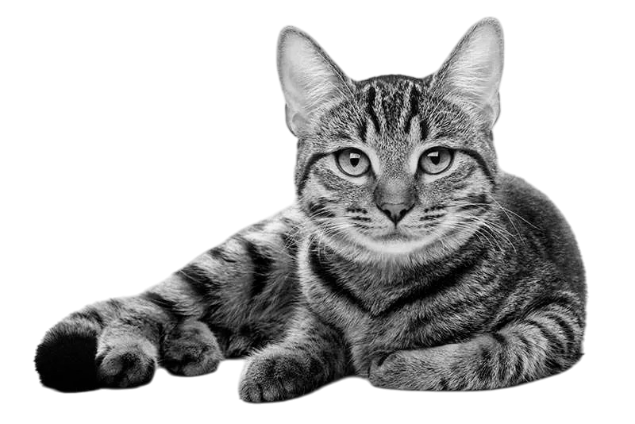
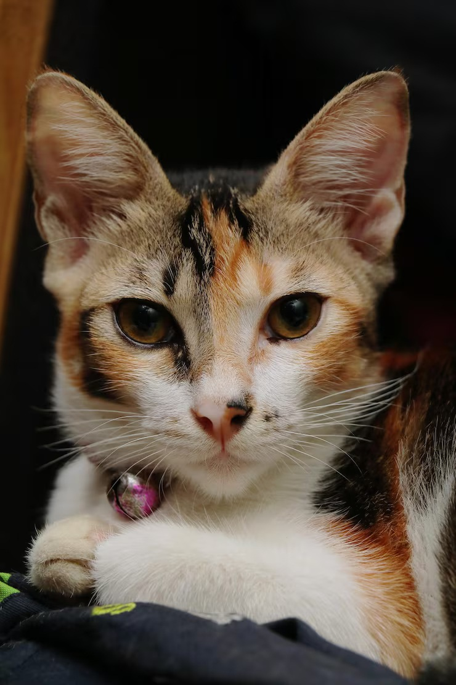
Copito
Sexo: Macho
Edad: 3 meses
Si buscas un compañero cariñoso, juguetón y fan de la mantequilla de maní, Capito es el indicado.
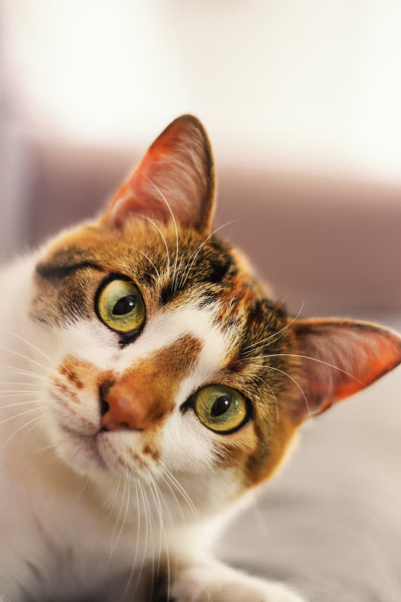
Nala
Sexo: Hembra
Edad: 3 años
Nala es muy activa y divertida; le encanta jugar y no tendrás días aburridos con ella.
Napoleón
Sexo: Macho
Edad: 2 años
Perfecto para si buscas un compañero para siestas largas y con muy buen apetito.
Peludo
Sexo: Macho
Edad: 5 años
Un gato tranquilo que disfruta ambientes pacíficos y sesiones de yoga.
Moobin
Sexo: Macho
Edad: 5 años
Un gato tranquilo que disfruta ambientes pacíficos y sesiones de yoga.
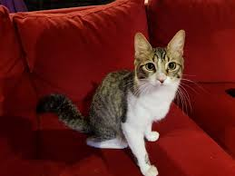
Luna
Sexo: Hembra
Edad: 2 años
Un gatica muy curiosa y cariñosa, le gusta mucho estar acostada en el sillón y ver la televisión.
Gasper
Sexo: Macho
Edad: 5 años
Gasper es muy intiligente, sabe muchos trucos asombrosos, aprende muy rapido.
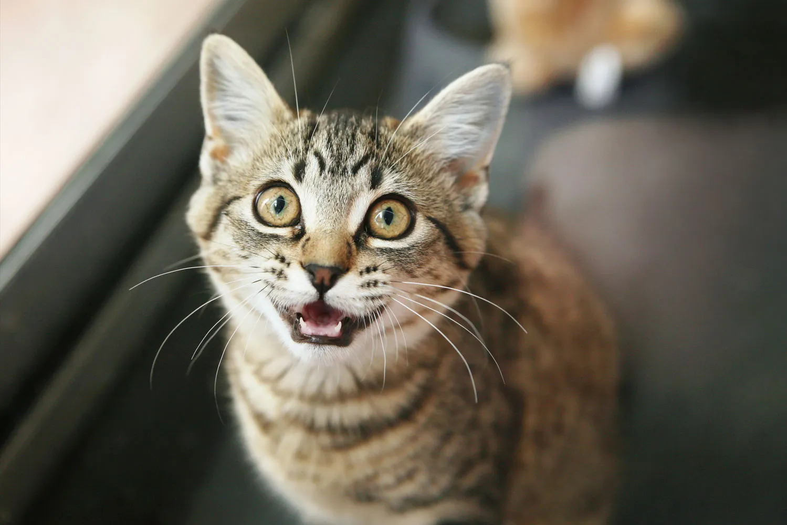
Simba
Sexo: Macho
Edad: 6 meses
Simba es un gato muy curioso y muy valiente, su postre favorito es el helado.
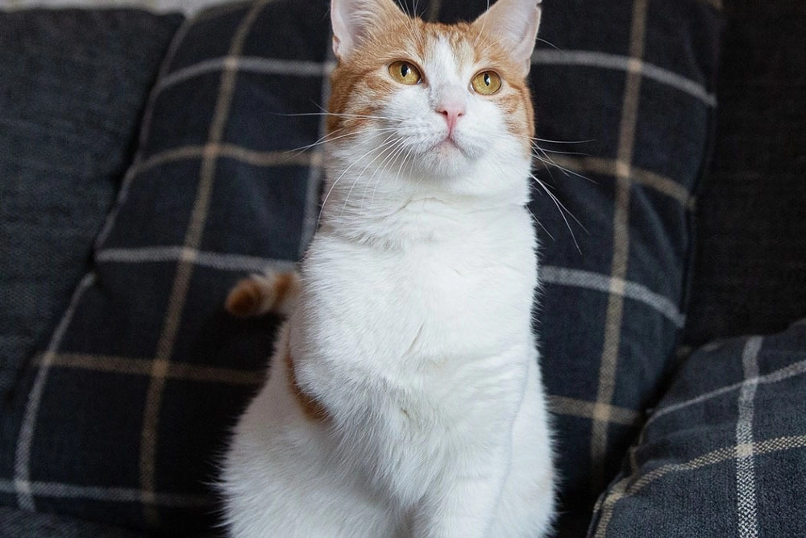
Mostaza
Sexo: Hembra
Edad: 3 años
Mostaza es una gatica muy fuerte y alegre, le gusta mucho los mimos, disfrutaras mucho de su compañia.
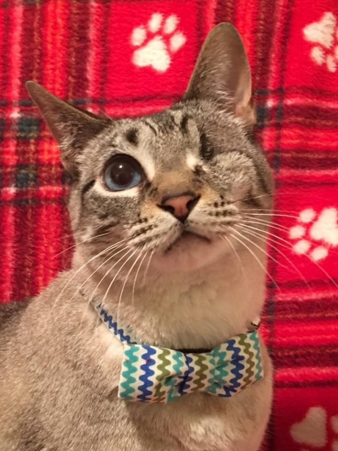
Capitan
Sexo: Macho
Edad: 2 años
Le gusta mucho estar acompañado y jugar con pelotitas, Capitan es un gato muy cariñoso, asi que preparate para recibir cariño todos los días.
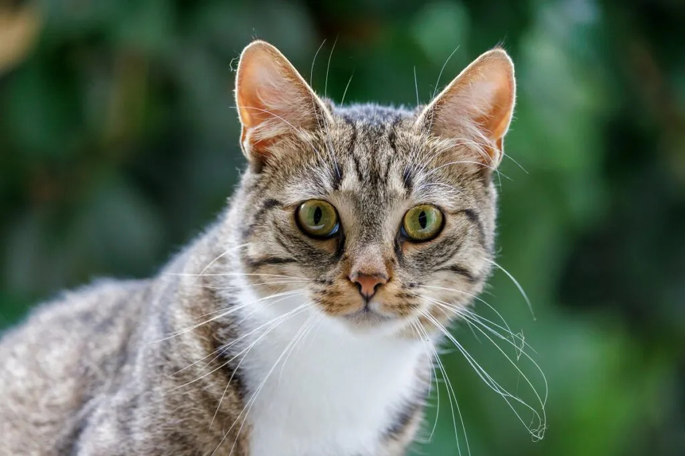
Miso
Sexo: Macho
Edad: 2 años
Miso es un gato grande y tranquilo. Es independiente pero aprecia mucho las caricias en la barbilla.
Ideal para personas que buscan una compañía relajada y afectuosa.
Estrella
Sexo: Hembra
Edad: 4 años
Estrella es una gatita muy elegante y cariñosa. Es muy paciente y le gusta observar el mundo desde la ventana.
Disfrutará de tardes de siesta a tu lado.
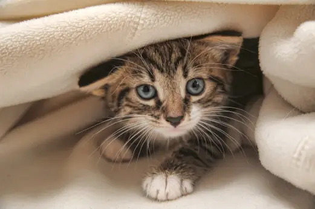
Pistacho
Sexo: Macho
Edad: 8 meses
Pistacho es un torbellino de energía. Es muy activo y necesita espacio para jugar.
Si buscas un gato divertido que te entretenga, ¡Pistacho es el indicado!
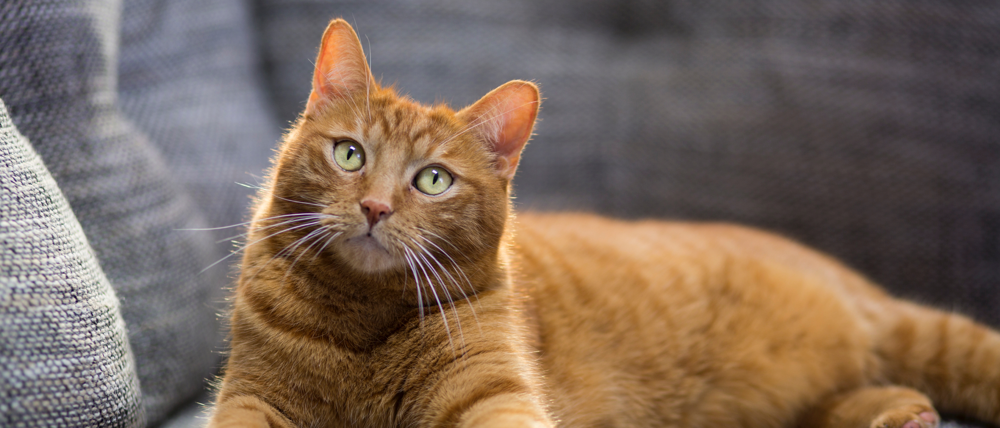
Canela
Sexo: Hembra
Edad: 3 años
Canela es una gata dulce y un poco tímida al principio. Una vez que toma confianza, se convierte en una compañera inseparable.
Su ronroneo es el más potente.
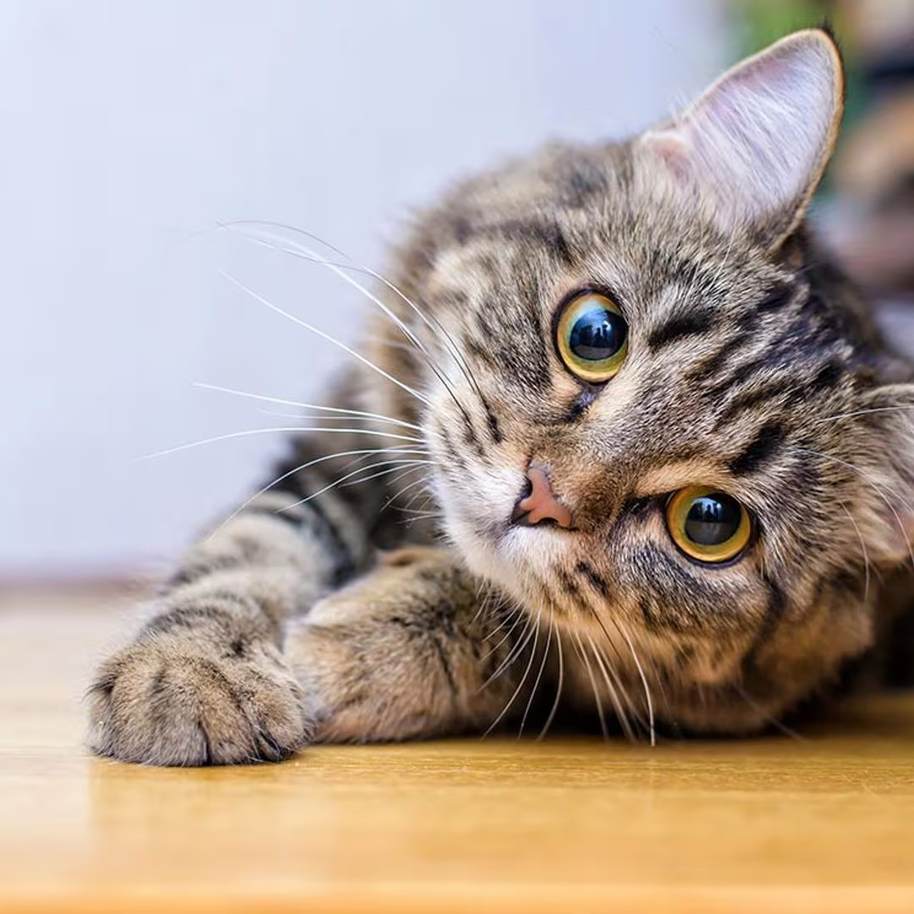
Kiwi
Sexo: Macho
Edad: 1 año
es un gato aventurero con un pelaje atigrado precioso. Le fascina jugar a las escondidas y es muy conversador.
Te saludará con maullidos cada mañana.
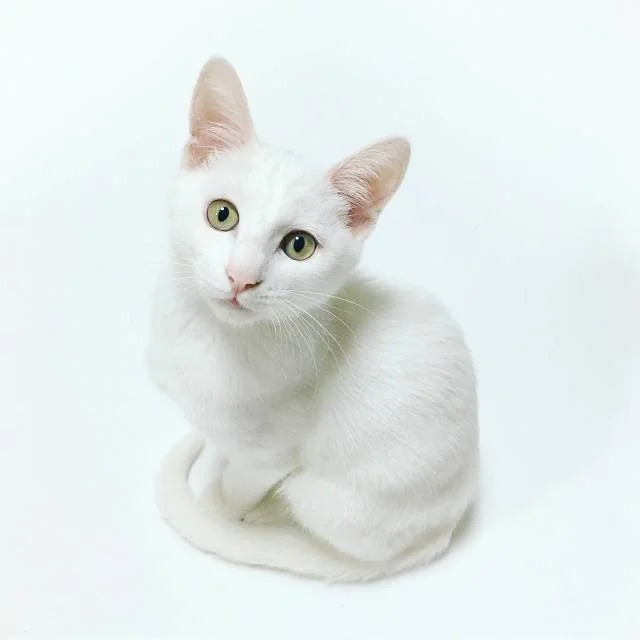
Azúcar
Sexo: Hembra
Edad: 2 años
Azúcar es una gatita blanca y esponjosa, tan dulce como su nombre. Le encanta que la cepillen y es muy cariñosa con los niños.
Aportará paz y ternura a tu hogar.